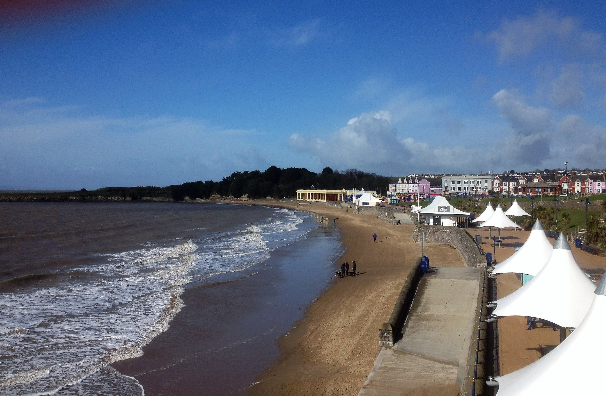
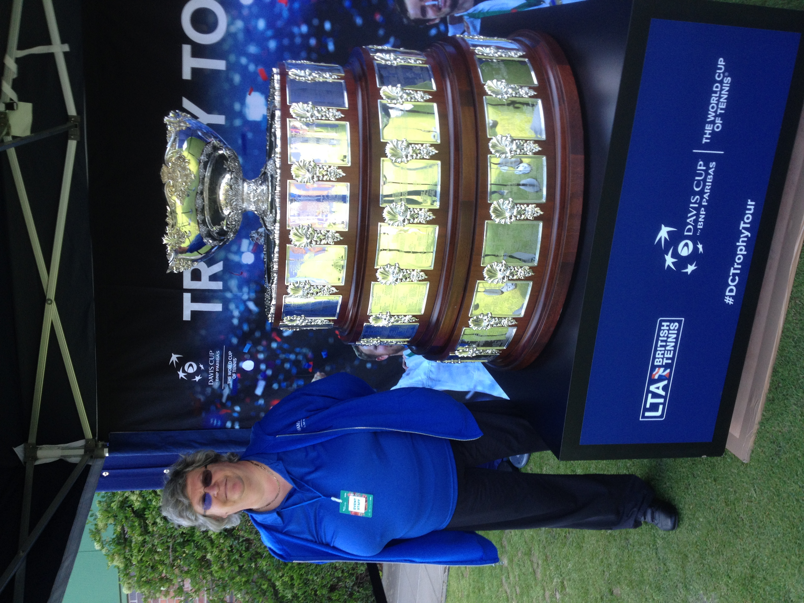
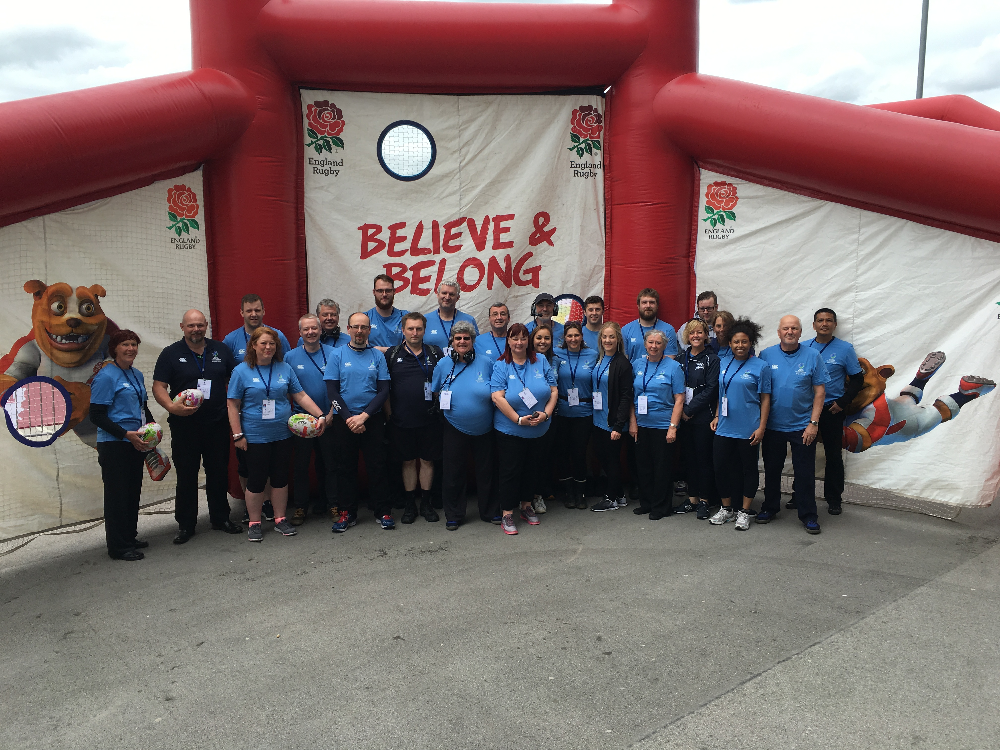
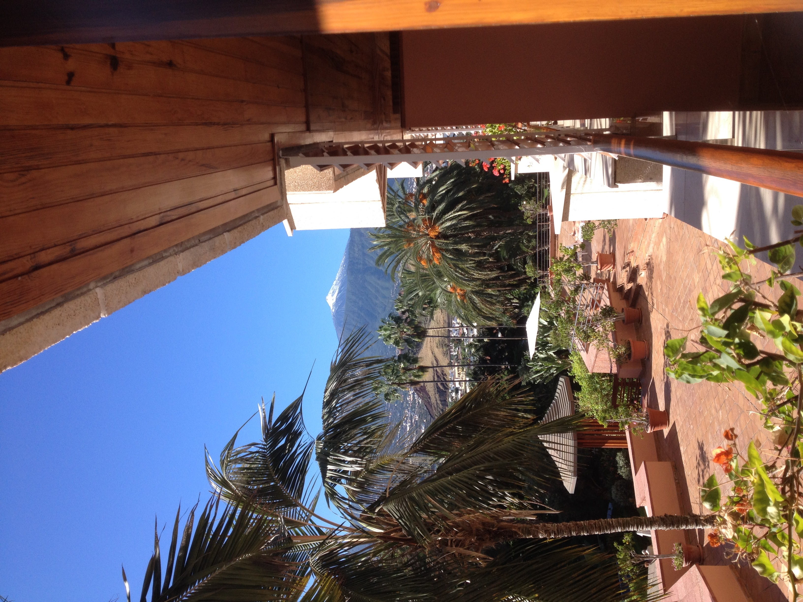

2016
January 2016
The year started with a trip to Buxton to see Sarah Millican at the Opera House in her Outsider Tour. As it was January, I didn't risk travelling over the Cat and Fiddle late at the night, as who knew what the weather would be like. I spent the night at the The Westminster Hotel which is located on Broad Walk overlooking the Pavilion Gardens. Lovely cooked breakfast the next morning. I took a few snaps of Barry Island and the Prom whilst home at the end of the month, as it was looking lovely in the winter sunshine. The same goes for this picture in the October sunshine.
{kind=link}
February 2016
I did my first ever MCRVIP event, the National Squash Championships and the Masters Squash Championships. The big names were playing primarily on the two glass courts. The Masters were playing on the bog standard glass backed courts. I was initially paired up with Peter Maguire, and old hand, doing court maintenance. That is, moping the court at the end of each game, and cleaning the glass at the end of each match. Before I knew it, I was doing it on my own. Bit overawed to start with but it soon became clear it wasn't rocket science. I really enjoyed myself and all the MCRVIP old hands were very friendly.April 2016
Next was the Greater Manchester Marathon. The start/finish line was outside Old Trafford Cricket Club. I was assigned the area by the Metro stop to direct people, runners and public towards the start/finish line. Badly organised, I had to go get my lunch as my supervisor failed to show up. As the first runners came across the finish line, it became clear there was a problem. Runners were leaving without their kit bags because the queue to reclaim the baggage was huge. I went into the ground, and the sight reminded me of a disaster movie. There were people everywhere wrapped in tinfoil blankets, trying desperately to get their left luggage back. The organisers had saved money and moved from Old Trafford Football to Old Trafford Cricket, and there wasn't enough room in the left luggage area. Throwing people at the problem wouldn't solve it. There wasn't room for any more people to enter the area. I had to loan my phone to people who had left theirs in their bags, and at one point had to go and get a man's bag so he wouldn't miss his plane out of Liverpool.May 2016
I was back doing the Tour de Yorkshire, although a bit further afield this time. After a repeat of the training at the West Yorkshire Police training facility near Wakefield, I was assigned to Grosmont in the North Yorkshire Moors National Park. I decided to travel over the night before and stay in Glaisdale at Red House Farm B&B, taking in some scenery enroute. Instead of going the normal route, straight north out of Pickering, I turned left and didn't turn north until Aislaby. That took me up over Hartoft Rigg, and into Glaisdale down a very steep and windy hill. The B&B took a bit of finding, but was very comfy. Had time for a fabulous cooked breakfast, and to tell my fellow guests the best way to see the race, before parking up on the outskirts of Grosmont. I made sure my allocated spot was at the level crossing by the station for the steam railway. When the publicity caravan came through, it stopped and blocked the railway line. The station manager was not a happy bunny. The race wasn't far behind. I took the opportinity to go over to Hinderwell and meet up with the Maltby's. Kirsten and Rosa were there.
{kind=link}
Mum and I had another week's holiday in Tenerife up in Puerto de la Cruz. It is often cloudy up north, and can be a little cool. Our hotel room on the inside of the hotel had lovely views of Teide. On our return, I had my first experience of being a Lancashire Cricket volunteer at a T20 Blast match. A lot of the Squash MCRVIP lot were also there as vets. First introduction to Lanky.
A lot of the same people were also at the Tennis at the Northern Club in Didsbury. The Davis Cup, which is huge, was also there. Tradition says that only the people who win the cup can touch it. The people who assembled it on site did so wearing gloves. My first task was to be the scorer at a Parent and Child tournament taking place on the clay courts. That was ore difficult than it sounds. Cathie Sabin, the LTA President introduced herself to me. The Manchester Trophy Challenger was a pre Wimbledon men's grass court tournament, that was won by Dustin Brown.
June 2016
The World Rugby Under20 Championships were held in Manchester,using the Ethiad Academy pitch and the AJ Bell stadium. I was one of the volunteers at the AJ Bell. I had applied for a rugby specific role,but was a tad dismayed to be assigned Pitchside Entertainment. Before I could tell them they could stick the cheer leading pom-poms where the sun don't shine, they assured us that we would be working with the professional team who were in charge of all off pitch stuff, including pre-match anthems and flags. It was one of the best roles I've had. We were an integral part of the team, wearing radio headsets, attending the pre match briefings and following the day long script. During the qualifying rounds, there were three matches a day. First task, get the guard of honour,(usually kids), for the anthems sorted. They had to be lined up in height order with flags. On cue, we had to march them onto the pitch and laid out in a fanned out V. Once both anthems had been played, we had to get them off the pitch as quickly as possible. Next up find volunteers for the half-time and between match games - Space Hopper and Hampster Ball races - and help getting those on and off the pitch. Once the rugby actually started, we could watch, usually from our volunteer room, which was one of the hospitality boxes in the mainstand, which had its own balcony. When the Ethiad people joined us for the finals, they were jealous as their room was in the bowels of the stadium where they could see nothing. Argentina quickly became our favourites, both on and off the pitch, especially after they beat South Africa. They lost to Ireland in the semis, who went on to lose the final to England. We volunteers got a thank-you letter from Bill Beaumont, Chairman of World Rugby.
{kind=link}
July 2016
Another trip to Gawsworth Hall to see the Oddsocks Touring Company, this time doing Much Ado about Nothing. Much better weather this time nut just as much fun watching people picnicing from my favourite spot under the tree.Later in JulyI was at Old Trafford for the 2nd Test between England and Pakistan. I was in duty all day for the four days of the Test. An interesting start had me on duty directing traffic down at the Tram stop, and watching a Walking Pepperami. England batted first. Alistair Cook made 105 and Joe Root 254, as England made 589 for 8 declared. Pakistan were bowled out for 198. England didn't enforce the follow-on and made a quick 173 for 1, Cook and Root both ending up not out in the 70's. Pakistan facing a target of 565, were all out for 234. On Day 3, Blowers was outside the Old Trafford shop, signing copies of his latest book, and the Champions Trophy was on display.
At the end of the month, I spent the weekend staying at The Chequers Inn to attend the Women's British Open in Woburn. It was not my favourite course, being an inland, parkland, tree-lined course, rather than a links course. Spotted both Karen Stupples and Ken Brown working for the TV coverage.
September 2016
 More sports volunteering, this time via Cheshire East Council. The Tour of Britain cycle race was spending the day in Cheshire. I started the day as a supervisor of a team manning a crossing at the start in Congleton. Once the race was en-route, we jumped in a minibus and were driven to the Cat and Fiddle, getting there before the race did. There was already a bossy supervisor on site, so I reverted to being a pleb.{kind=link}
October 2016
The MCRVIP crowd were on duty at the Manchester Science and Industry Museum, which was the starting point for the Heroes Parade, celebrating the homecoming of the Rio Olympic and Paralympic Athletes. We, combined with the Museum own volunteers, were helping get the athletes onto the correct float in the correct order. The weather all morning was lovely, until the athletes had to board the floats when it started to rain and we were in charge of handing out rain ponchos. My float had some swimmers and divers, plus, the ever smiling boxer, Nicola Adams. We spent all morning in the Museum with so many famous and familiar faces. Two lads, interlopers, blagged their way onto one of the floats, but not one manned by the MCRVIP lot.End of October, and Mum and I were back in Puerto de la Cruz at the Hotel Botanico & Oriental Spa. We actually go to see snow on top of Teide.